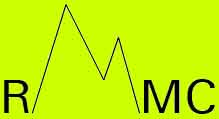

Rocky Mountain Mathematics Consortium
Member Colleges and Universities
The Rocky Mountain Mathematics Consortium is a nonprofit corporation with headquarters at Arizona State University. It's institutional members are the following:
University of Alberta
Arizona State University
University of Arizona
Brigham Young University
Colorado State University
University of Colorado
University of Denver
North Dakota State
Idaho State University
University of Kansas
Montana State University
University of Montana
University of Nebraska
New Mexico State University
University of New Mexico
Northern Arizona University
Oklahoma State University
Oregon State University
Texas Tech University
University of Texas at El Paso
University of Utah
Utah State University
Washington State University
University of Wyoming